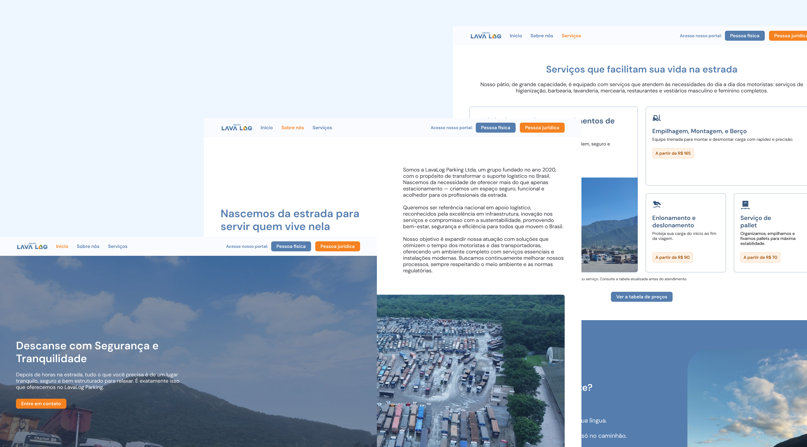

Redesign do site institucional, tornando-o a porta de entrada tanto para novos clientes quanto para o sistema de agendamento da LavaLog.
Ver site ao vivoA LavaLog Parking é um estacionamento de caminhões com estrutura completa de descanso, segurança e serviços para motoristas. O site existia, mas não cumpria seu papel: não convertia visitantes em clientes e não servia como ponto de partida funcional para o sistema de agendamento interno. O projeto foi um redesign completo de comunicação, arquitetura de informação e fluxo de acesso ao portal.
O site da LavaLog existia, mas não cumpria seu papel estratégico: a comunicação era genérica, o design estava desatualizado e os visitantes não encontravam caminhos claros para agir, seja entrar em contato ou acessar o sistema de agendamento.
Motoristas autônomos (Pessoa Física) e gestores de frota (Pessoa Jurídica) chegam ao site com intenções diferentes. O site precisava identificar e guiar cada perfil com clareza desde o primeiro acesso.
O sistema de agendamento da LavaLog existia de forma isolada. Os clientes não sabiam como acessá-lo pelo site ou nem que ele existia. O redesign precisava tornar o site a entrada natural para esse portal.
Para quem nunca usou o estacionamento, o site era o único ponto de contato inicial. Ele precisava transmitir confiança, mostrar estrutura real e reduzir as barreiras de conversão para o primeiro agendamento.
Entrevistei motoristas e gestores de frota que já usavam o estacionamento para entender como chegaram até lá, o que buscavam no site e onde o fluxo de acesso ao agendamento quebrava.
Levantei e analisei avaliações do Google e outras plataformas para identificar padrões de percepção: o que os clientes elogiavam, o que criticavam e o que repetidamente causava confusão ou frustração.
Mapeei concorrentes diretos e sites de referência em setores como hotelaria rodoviária e terminais logísticos, identificando padrões de navegação, linguagem visual e fluxos de acesso a sistemas de reserva.
O site foi reestruturado com dois fluxos claros desde o primeiro acesso: Pessoa Física e Pessoa Jurídica — cada um com sua jornada de informação e seu acesso direto ao portal de agendamento. A identidade visual foi atualizada mantendo a essência da marca, com azul institucional, laranja para ações e fotografia real do espaço para transmitir credibilidade imediata.
